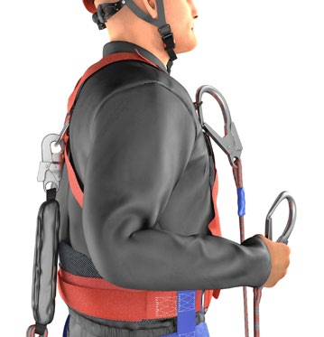
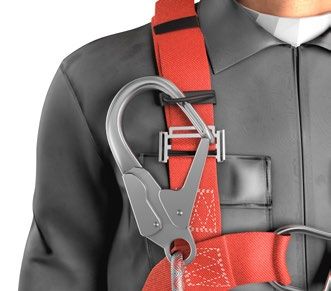
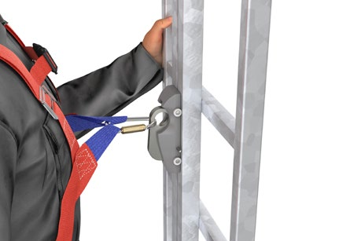
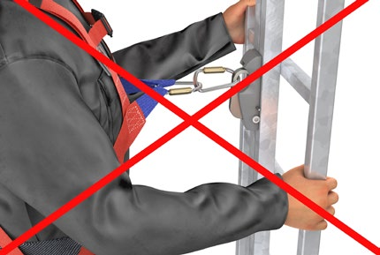
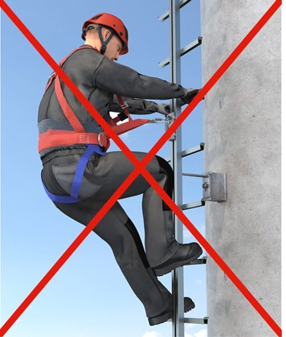
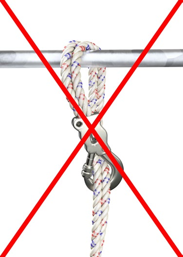
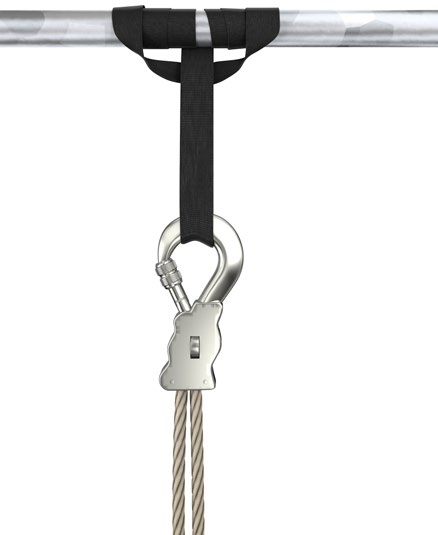

8.1.1 PSA gegen Absturz werden für den jeweiligen Einsatzzweck ausgewählt und sind bestimmungsgemäß zu benutzen.
Grundlage für die bestimmungsgemäße Benutzung der PSA gegen Absturz sind die Gebrauchsanleitung des Herstellers und die Betriebsanweisung der Unternehmerin oder des Unternehmers.
8.1.2 PSA gegen Absturz sind so zu benutzen, dass ein Aufprallen auf den Boden oder andere Hindernisse ausgeschlossen ist und ein Anprallen an festen Gegenständen möglichst vermieden wird.
Es gilt zu beachten, dass sich die örtlichen Gegebenheiten und damit die verfügbare lichte Höhe ändern können.
8.1.3 PSA gegen Absturz dürfen nur zur Sicherung von Personen, nicht jedoch für andere Zwecke, z. B. Bandschlingen als Anschlagmittel für Lasten, verwendet werden. Davon abweichend kann es vorkommen, dass der Hersteller Teile der PSA gegen Absturz für den Transport geringer Lasten vorsieht, z. B. Materialösen am Auffanggurt.
8.1.4 Eine Veränderung der ausgewählten und zur Verfügung gestellten Auffangsysteme ist unzulässig.
Hinweis: Eine Verlängerung der vom Hersteller vorgesehenen Zwischenverbindung von Auffanggurt und mitlaufendem Auffanggerät kann zu höheren Auffangstrecken oder sogar zum Versagen des Systems führen.
Hinweis: Das Anfügen eines nicht zur Führung kompatiblen Auffanggerätes kann im Sturzfall zum Versagen des Auffanggerätes führen.
8.1.5 Andere PSA dürfen nur zusammen mit PSA gegen Absturz verwendet werden, wenn sichergestellt ist, dass eine gegenseitige Beeinträchtigung der Schutzfunktionen nicht zu erwarten ist (siehe auch Abschnitt 7.2.2).
8.1.6 PSA gegen Absturz dürfen keinen Einflüssen ausgesetzt werden, die ihren sicheren Zustand beeinträchtigen können.
Solche Einflüsse sind z. B.:
Hinweis: Eine Beschriftung von textilen Bestandteilen, wie z. B. Gurtbändern, mit lösemittelhaltigen Farbstiften ist nicht gestattet.
8.1.7 Verbindungsmittel, bewegliche Führungen sowie einziehbare Verbindungsmittel von Höhensicherungsgeräten dürfen nicht über scharfe Kanten geführt werden.
Durch Verwendung geeigneter Hilfsmittel, z. B. ein gerundetes Holz, können scharfe Kanten vermieden werden. Umhüllungen bieten einen zusätzlichen Schutz des Verbindungsmittels.
Beschädigte oder durch Sturz beanspruchte PSA gegen Absturz sind der Benutzung zu entziehen, bis eine sachkundige Person der weiteren Benutzung zugestimmt hat (siehe auch Abschnitt 10.3.2).
Bei der Auswahl der Auffangöse zur Befestigung z. B. mit einem Verbindungsmittel sind die Positionen des Anschlagpunktes, die Verletzungsrisiken durch den Auffangvorgang und die Hängeposition nach dem Auffangvorgang zu berücksichtigen.
Das Verletzungsrisiko durch den Karabinerhaken ist bei der Verwendung der vorderen Auffangöse höher. Durch die Verwendung der hinteren Auffangöse ist eine ungünstigere Hängeposition anzunehmen.
Halteösen an Auffanggurten dürfen nicht für Auffangfunktionen benutzt werden.
Bei der Benutzung von Steigschutzeinrichtungen ist die dafür vorgesehene Steigschutzöse am Bauchgurt oder die vordere Auffangöse direkt an der Zwischenverbindung (z. B. ohne zusätzliches Seil bzw. zusätzlichen Karabinerhaken) anzuschließen.
Hinweis: Die Verwendung der Positionierungsöse eines in einem Auffanggurt integrierten Sitzgurts ist aufgrund ihrer geringen Tragfähigkeit nicht für die Benutzung mit einer Steigschutzeinrichtung erlaubt.
Mitlaufende Auffanggeräte einschließlich beweglicher Führung dürfen aufgrund der zu erwartenden ungünstigen Hängeposition nach einem Auffangvorgang nicht an die Steigschutzöse am Bauchgurt angeschlossen werden.
Bei der Verwendung von Auffanggurten mit einer Verlängerung an der rückwärtigen Auffangöse (siehe Abbildung 30) ist darauf zu achten, dass die jeweils zulässige Gesamtlänge des Auffangsystems, z. B. 2 m bei einem Verbindungsmittel mit Falldämpfer, nicht überschritten wird.
Verbindungsmittel dürfen nicht durch Knoten befestigt, gekürzt oder verlängert werden.
Zur Vermeidung der Schlaffseilbildung, eines Sturzes bzw. zur Verringerung der Sturzstrecke sind Verbindungsmittel mit Längeneinstellvorrichtung zu bevorzugen. Verbindungsmittel zur Arbeitsplatzpositionierung müssen straff gehalten werden, damit ein Sturz vermieden wird.
In Rückhaltesystemen dürfen nur Verbindungsmittel eingesetzt werden, mit deren maximaler Länge die nächstgelegene Absturzkante nicht erreicht werden kann.
Bei der Verwendung von zweisträngigen Verbindungsmitteln mit Falldämpfern (siehe Abbildung 34) muss der Falldämpfer immer an der Auffangöse des Auffanggurtes befestigt werden (siehe Abbildung 75a). Während des Fortbewegens muss ein Strang immer mit der Anschlageinrichtung verbunden sein. Der unbenutzte Strang darf nicht in eine Halteöse oder andere tragende Teile des Auffanggurtes eingehängt werden, sondern z. B. in eine Fixieröse (siehe Abbildungen 75a und 75b).

Abb. 75a Befestigung des Falldämpfers an der Auffangöse des Auffanggurtes

Abb. 75b Einhängen des unbenutzten Seilstrangs in eine Fixieröse am Schultergurt
Hinweis: Ein Übersteigen des Anschlagpunktes ist aufgrund der Gefahr des Aufprallens bei einem Sturz von Person und Ausrüstung auf Teile der Umgebung zu vermeiden.
Höhensicherungsgeräte (HSG) sind gebrauchsfertige Bestandteile. Die falldämpfende Funktion ist bereits im HSG integriert. Daher darf bei der Verwendung des Auffangsystems mit HSG kein zusätzlicher Falldämpfer eingebaut werden. Dieser würde die notwendige Impulskraft/Auslösegeschwindigkeit beeinflussen und die Funktion des HSG wäre somit nicht mehr gewährleistet.
Das HSG sollte grundsätzlich an Anschlageinrichtungen befestigt werden, die sich senkrecht über der Person befinden. Dadurch werden die Fallstrecke und die Gefahr des Pendelsturzes minimiert. Inwieweit auch eine Befestigung des HSG am Auffanggurt zulässig ist, ist der Gebrauchsanleitung des Herstellers zu entnehmen.
Es gibt mitlaufende Auffanggeräte, die in einer Richtung an der beweglichen Führung ohne manuelle Betätigung mitlaufen, in der anderen Richtung ist dies nur durch manuelle Betätigung möglich. Dabei muss durch Greifen des Auffanggerätes der Sperrmechanismus für den Auffangvorgang aufgehoben werden. Deshalb darf die Betätigung jeweils nur von einem sicheren Standplatz (z. B. beim Herabsteigen auf einer Steigleiter befinden sich beide Füße auf der Sprosse und eine Hand am Leiterholm) erfolgen.
Ein mitlaufendes Auffanggerät ist ungeeignet, wenn ein sicherer Standplatz nicht vorhanden ist (z. B. die Standebene ist zu steil, Steildach mit rutschiger Oberfläche). In diesen Fällen ist zu prüfen, ob die Tätigkeit unter Verwendung von Zugangs- und Positionierungsverfahren unter Zuhilfenahme von Seilen (siehe DGUV Information 212-001) ausgeführt werden kann.
Es ist für die Sicherheit bei der Benutzung von Steigschutzeinrichtungen wesentlich, dass Auffanggerät und Führung anhand der Kennzeichnung und unter Berücksichtigung der Gebrauchsanleitung eindeutig zugeordnet werden können. In Zweifelsfällen ist der Hersteller zu kontaktieren.
Die Steigschutzeinrichtung darf nicht als Anschlageinrichtung und zur Arbeitsplatzpositionierung benutzt werden. Das Auffanggerät, verbunden mit der entsprechenden Auffangöse des Auffanggurtes, begleitet ohne manuelle Betätigung die steigende Person. Insofern ist ein Führen des Auffanggerätes von Hand nicht erforderlich. Die manuelle Betätigung des Auffanggerätes und seitliches Hinauslehnen können die sichere Funktion des Auffanggerätes beeinflussen.
Die Zwischenverbindung des mitlaufenden Auffanggerätes darf für den Anschluss an die vordere Auffangösen des Auffanggurtes nicht verlängert werden. Durch eine Verlängerung der Zwischenverbindung besteht Lebensgefahr, da die sichere Funktion des mitlaufenden Auffanggerätes nicht gewährleistet ist. Diese Gefahr besteht auch, wenn

Abb. 76 Bestimmungsgemäße Befestigung

Abb. 77 Unzulässige Verlängerung der
Zwischenverbindung mit einem Karabinerhaken

Abb. 78 Unzulässige Verlängerung des Abstandes
Körper zum Auffanggerät durch zu locker angelegten Gurt
Positionierungsösen von Auffanggurten mit integrierter Sitzgurt- und Haltefunktion sind nicht für Auffangzwecke konzipiert und dürfen nicht für die Steigschutzeinrichtung verwendet werden. Es besteht die Gefahr des Versagens dieser Ösen bei einem Auffangvorgang. Zudem kann die Position der Ösen zu einer ungünstigen Hängeposition führen.
Befinden sich Ein- bzw. Ausstiegsstellen in einem absturzgefährdeten Bereich ist darauf zu achten, dass die Führungen mit Endsicherungen ausgestattet sind, die ein unbeabsichtigtes Herauslaufen des mitlaufenden Auffanggerätes und damit einen Absturz verhindern. Dies kann dort der Fall sein, wo die Führung erst ab einer bestimmten Höhe montiert wurde, wie z. B. an Hochspannungsmasten oder Schornsteinen, um bewusst den Zutritt von Unbefugten zu verhindern, oder an hängenden Leitern, die für die Fensterreinigung eingesetzt werden.
Grundsätzlich sind Steigschutzeinrichtungen für die Benutzung von einer Person ausgelegt. Es kann sich jedoch aus arbeitstechnischen Gründen (Nutzung eines sehr langen Steigweges) oder durch eine geplante Rettungsmaßnahme die Notwendigkeit der Benutzung von mehreren Personen gleichzeitig ergeben. Dafür muss eine Zustimmung des Herstellers mit entsprechenden Benutzungshinweisen, z. B. Abstand der Benutzer bzw. Benutzerinnen bei der Begehung, vorliegen.
Bei der Verwendung von Falldämpfern ist die zulässige Gesamtsystemlänge zu beachten.
Falldämpfer müssen so angeschlagen werden, dass deren Funktion nicht beeinträchtigt wird (siehe Abbildung 79 und 80). Bei der Verwendung von zweisträngigen Verbindungsmitteln (Y-Seil siehe Abbildung 34) ist der Falldämpfer immer direkt an der Auffangöse des Auffanggurtes zu befestigen.
 |
 |
Abb. 79 Unsachgemäßes Anschlagen eines Reibungsfalldämpfers |
Abb. 80 Richtiges Anschlagen: Zur Erhaltung der Funktionsfähigkeit des Reibungsfalldämpfers wird eine Bandschlinge als Anschlaghilfe verwendet |
Manuelle Sicherungen gegen unbeabsichtigtes Öffnen müssen immer verriegelt sein. Auch bei automatischen Verschlusssicherungen ist die ordnungsgemäße Verriegelung vor der Benutzung zu überprüfen.
Als manuelle Sicherung gegen unbeabsichtigtes Öffnen zählen z. B. Überwurfmuttern von Karabinerhaken (siehe Abbildungen 52a und 52b).
Bei der Verwendung von Verbindungselementen ist darauf zu achten, dass eine Querbeanspruchung vermieden wird.
Die Leistungs- und Funktionsfähigkeit der PSA gegen Absturz wird durch Umweltbedingungen (z. B. UV-Strahlung, Feuchtigkeit) und Einsatzbedingungen beeinflusst. Dazu gibt der Hersteller das Datum der Ablegereife auf der PSA gegen Absturz an. Alternativ kann die PSA gegen Absturz mit Monat und Jahr der Herstellung gekennzeichnet sein, wobei zur Bestimmung der Ablegereife alle zweckdienlichen Angaben in der Gebrauchsanleitung aufgeführt sein müssen.
Die Leistungs- und Funktionsfähigkeit der PSA gegen Absturz wird durch Umweltbedingungen (z. B. UV-Strahlung, Feuchtigkeit) und Einsatzbedingungen beeinflusst. Dazu gibt der Hersteller das Datum der Ablegereife auf der PSA gegen Absturz an. Alternativ kann die PSA gegen Absturz mit Monat und Jahr der Herstellung gekennzeichnet sein, wobei zur Bestimmung der Ablegereife alle zweckdienlichen Angaben in der Gebrauchsanleitung aufgeführt sein müssen.
PSA gegen Absturz dürfen nur dann in explosionsgefährdeten Bereichen benutzt werden, wenn diese Verwendung in der Gebrauchsanleitung des Herstellers angegeben ist.
Durch die Verwendung von PSA gegen Absturz in explosionsgefährdeten Bereichen können elektrische, elektrostatische oder mechanisch verursachte Energiebögen oder Funken entstehen, die ein explosives Gemisch entzünden könnten. Dies gilt besonders für: